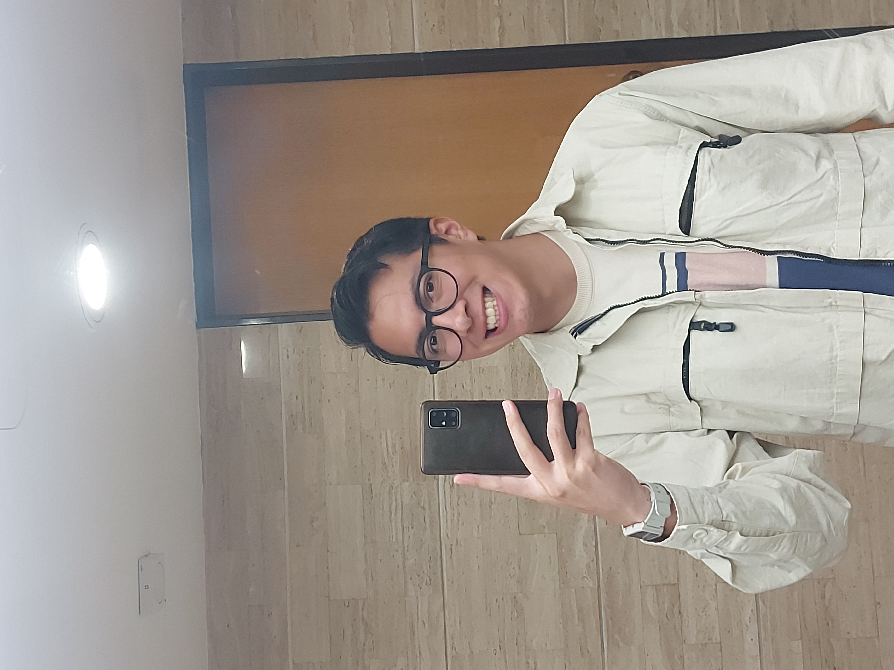

Rodrigo Hernández-Cervantes cursa el último año de la licenciatura en Economía en la Universidad Nacional Autónoma de México (UNAM). Actualmente realiza su servicio social en el Banco de México, dentro de la Gerencia de Análisis Económico Internacional.
Sus intereses se centran en la econometría, la economía de la información y la economía del comportamiento. Tiene interés por el modelado basado en agentes y busca programas de internacionalización en economía con un enfoque cuantitativo.
Fuera del ámbito académico, practica tenis y calistenia. Es melómano y cinéfilo, y mantiene interés por temas de política, antropología y sociología.
